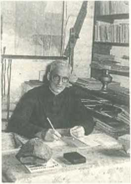
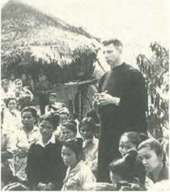
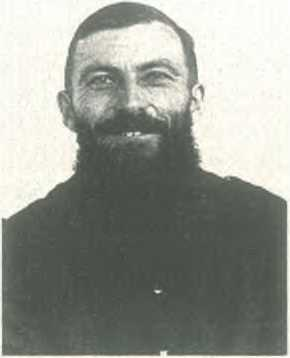
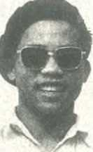
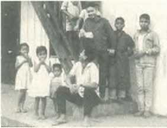
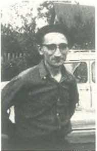

IV.LA COMUNIDAD MARTIRIAL, SIGNO DE COMUNIÓN Y SINODALIDAD
Un elemento esencial del carisma de los Misioneros Oblatos de María Inmaculada es la vida en comunidad, en continuidad con el testamento espiritual de su fundador: «Entre vosotros la caridad, la caridad, la caridad... y fuera el celo por la salvación de las almas». En este sentido, llama la atención que haya dos grupos de mártires oblatos beatificados, los veintidós de España y estos seis de Laos. Constituyen, así, un significativo testimonio de su especial vocación, siendo igualmente significativo el que, entre estos dos grupos de oblatos, se hallen laicos que dieron su vida junto a ellos por la fe. Se cumple, de esta forma, una de las características propias de la vida religiosa, ya que «las personas consagradas, en la medida en que profundizan su propia amistad con Dios, se hacen capaces de ayudar a los hermanos y hermanas» en su camino de santidad (VC 39). También se hace realidad en ellos otra enseñanza que verbalizará san Juan Pablo II años más tarde, al afirmar: «Se pide a las personas consagradas que sean verdaderamente expertas en comunión, y que vivan la respectiva espiritualidad como ‘testigos y artífices de aquel proyecto de comunión que constituye la cima de la historia del hombre según Dios’» (VC 46).
Por lo tanto, podemos decir de estos oblatos beatificados que vivieron su vocación con total fidelidad, aun cuando por el estilo de vida misionero desarrollado en Laos, intentando abarcar un extenso territorio con pocas personas, la soledad fuera una de las notas principales que les tocara sufrir. Lo hemos comprobado al abundar en la figura del beato Mario Borzaga. Aún así, resultan sugerentes unas palabras del teólogo Hans Urs von Balthasar, quien afirma: «Un sujeto espiritual humano, al tiempo que se convierte teológicamente en persona gracias a una vocación y misión única, queda a la par desprivatizado, socializado y transformado en espacio y agente portador de comunidad». En el cuadro que conmemora al grupo de mártires laosianos, donde se intentan reflejar los paisajes y condiciones de vida del momento, esta reflexión adquiere rostros concretos. No se trata de una idea abstracta, sino de personas que generaron comunidades a su alrededor.
Sirviéndonos, nuevamente, del teólogo suizo, encontramos la siguiente afirmación: «La persona teológica llega tan lejos como su vocación y misión, y precisamente del modo como asume y realiza activamente esta misión depende el que sea esa su dimensión potencial y llegue a ser también actual; es decir, de su misión depende hasta qué punto ella, en Christoi y en analogía con él, es capaz de abrir en su propia persona un espacio de libertad para los demás». En este sentido, gracias al Diariode un hombre feliz, podemos decir que conocemos de primera mano muchas de las vivencias de aquellos intrépidos religiosos y catequistas laicos, quienes, por la fe, se convierten para nosotros en portadores de comunidad. Por eso presentamos, brevemente, las biografías de algunos de ellos, ya que en Cristo, cobran actualidad para nosotros, abriéndonos un espacio de libertad en nuestro hoy. Nos invitan, desde su cercana lejanía, a construir una comunidad cristiana martirial, que sea signo de comunión por su sinodalidad, por su caminar juntos hacia el Señor resucitado.
Cinco nuevos oblatos en la comunidad del cielo
El P. José Boissel nació el 20 de diciembre de 1909 en las marchas de Bretaña (Francia), en el seno de una familia humilde de granjeros. De vocación temprana, cursó los siete años de educación secundaria en el juniorado de los Misioneros Oblatos de María Inmaculada, en Jersey (Reino Unido). Después ingresó en el noviciado en la isla de Berder, en el golfo de Morbihan (Francia). Continuó con los estudios de Filosofía en el seminario de Lieja (Bélgica) y de Teología en el de La Brosse-Montceaux (Seine-et-Marne, Francia). El 4 de julio de 1937 fue ordenado sacerdote y en mayo, con tres compañeros, es destinado a Laos, a los 29 años de edad. Como curiosidad, señalamos que no había querido pedir a su Superior General ninguna misión precisa; no obstante, Laos se correspondía perfectamente con lo que deseaba.
Allí llegará en octubre de 1938, siendo enviado muy pronto a la zona de Xiengkhoang, donde la evangelización no había hecho más que empezar. Sin conversiones al inicio, había suscitado en ellos, sin embargo, un verdadero sentimiento de amistad, sobre todo entre los hmong. Fue el primero de los oblatos que se hizo amigo de este pueblo.
En marzo de 1945, los japoneses atacaron Laos, por lo que José Boissel, junto a su compañero, el P. Vincente Le Calvez, y al prefecto apostólico, Mons. Juan Mazoyer, omi., fueron capturados y retenidos entre una población hostil. De vuelta a Laos en 1946, el P. José recuperó el contacto con los hmong. En poco tiempo, la misión se vuelve inaccesible a causa de la persistente inseguridad. Escribe: «Ha llegado el momento de instalarme definitivamente».
Las condiciones materiales eran muy precarias y él mismo tuvo que plantar arroz para poder subsistir. En su carta a Mons. J. Mazoyer, escribe: «Dentro de diez días estarás a los pies del Santo Padre; ¿qué pensará de Laos? Pobre Laos, pobre Indochina; nada parece ir bien; la locura reina siempre y en todas partes. Permaneceremos unidos a Dios y tendremos confianza en él». Entre 1948 y 1949, el P. J. Boissel regresó a Francia para restablecer su salud, muy quebrantada por las privaciones. De vuelta a Laos, aseguró durante varios años la formación de catecúmenos y neófitos en diversos pueblos de las montañas de Xiengkhoang. En noviembre de 1957, dejó Xiengkhoang definitivamente y la zona quedó en manos del P. Luis Leroy, omi. A partir de ahí, emprendió una nueva etapa de su vida misionera, al ser destinado al distrito de Paksane, donde trabajó hasta su último día. Primero, se encargó de una aldea arrocera de Nong Veng; posteriormente, a partir de 1963, se trasladó a Ban Na Chik.
Desde allí, describirá, con profunda tristeza, las condiciones de vida de sus nuevos feligreses: «Casi todas las familias sufren las consecuencias de una guerra que se prolonga. Aquí hay mujeres cuyos maridos están en el ejército, familias desplazadas; pueblos enteros han huido de la zona de combate y se han establecido en la llanura. A unos diez kilómetros de mi pueblo, a orillas del Nam Nhiep, hay un grupo de sesenta familias cristianas que han abandonado todas sus posesiones y sus arrozales bajo la amenaza de la guerrilla, prefiriendo salvar su fe y la de sus hijos. A la espera de encontrar una zona boscosa para reanudar sus cultivos, viven principalmente de la ayuda. Recibo y visito a todos, intentando consolar y ayudar a cada uno en la medida de mis pobres medios: cuidado de los enfermos, apoyo a los más necesitados. No podemos decir lo suficiente sobre los horrores de la guerra para la pequeña población de Laos. Desde hace más de diez años, sus grupos armados repiten las mismas consignas, prometiendo maravillas y prodigios una vez alcanzada la victoria. Mientras tanto, solo hay requisas de arroz, favores sirviendo a los combatientes, detenciones y desapariciones, un clima de miedo y de sospecha. Bajo esta amenaza vivimos todos hoy. Pero debemos resistir hasta el día en que Dios nos dé la paz. Por eso sigo visitando regularmente a todas estas personas, para darles a todos palabras de esperanza, y a los cristianos, asistencia sobrenatural, que les ayuda a santificar estas miserias del momento. La mayoría de las veces vengo con las manos vacías y sufro por esos ojos brillantes que me miran, esperando algún alivio material que yo no puedo proporcionarles».
Impresionan estas vivencias narradas por él mismo, constatando esos años difíciles que la historia describe de forma general, pero que al ser vividos por una persona, adquieren un rostro y, por lo tanto, un tono diferente. Estas experiencias endurecieron algunos rasgos de su carácter, pero sin llegar a deteriorar sus buenas cualidades. Una de las dos mujeres laicas consagradas que estuvieron a punto de morir con él, afirma: «El P. Boissel era un hombre completo, rápido pero generoso, que cumplía con todas sus responsabilidades. Tenía una voz fuerte; en cuanto a su carácter, era un hombre ardiente, fogoso, pero se ocupaba de cada uno individualmente, sobre todo de los pequeños, de los pobres, de los niños. Se preocupaba por su formación cristiana, porque eran recién convertidos. Al llegar a cada pueblo, tocaba la campana, llamando a los cristianos a confesarse; luego celebraba la misa. Después hablaba con el catequista del pueblo, con la gente del pueblo y con los ancianos. Autorizaba los bautizos y los futuros matrimonios. Estaba atento a los enfermos a los que atendía él mismo, incluidos los partos difíciles. Era atento con todos, entregándose totalmente. Todo lo que decía y todo lo que hacía salía de su corazón, de lo más profundo de su corazón, de lo más profundo de su fe. Tenía una gran fe; rezaba mucho. Había entregado su vida al Señor. Su rasgo más notable era el amor a los pobres».
Durante la estación de las lluvias, todos los sábados, al final de la jornada, el P. José Boissel iba a uno de los pueblos y volvía el domingo hacia el mediodía. El sábado 5 de julio de 1969, decidió ir a Hat I-Ét, un pueblo de refugiados Kmhmu’ a unos 20 kilómetros de Paksane. Debido a la falta de seguridad, ese año no pudo ir allí a ejercer su ministerio durante varios meses. Como era su costumbre, partió hacia las cuatro de la tarde junto con dos jóvenes misioneras laosianas, quienes le ayudaban con las visitas, el cuidado de los enfermos y el servicio religioso. El sobrino de una de ellas, de 10 años, también había subido en secreto al vehículo. Al enterarse de la presencia del niño, el P. Boissel detuvo el coche y le hizo bajar, advirtiéndole: «No deberías venir con nosotros. Yo, el sacerdote, y las dos misioneras, hemos dado la vida por el Señor. Para nosotros, morir no hace ninguna diferencia: nuestras vidas están ofrecidas al Señor. Pero tú no debes venir con nosotros». Luego, a lo largo del camino, habló de la muerte, diciendo: «No debemos temer a la muerte. Ya hemos entregado nuestras vidas al Señor. Viajando como viajamos, siempre hay peligro».
Una de esas acompañantes, narra lo acontecido aquella tarde: «Dos o tres kilómetros antes de llegar al pueblo, en un recodo de la carretera, oí una ráfaga de disparos que nos apuntaba. Los neumáticos estallaron y me hirieron en la mano. Vi una bandera roja moviéndose en el bosque que bordeaba nuestra ruta. Una segunda ráfaga de disparos alcanzó a Thérése en la cabeza; como yo soy más pequeña, las balas no me alcanzaron. Los disparos venían de la izquierda, del lado del conductor. El P. Boissel fue alcanzado en la cabeza, cerca de la boca y en el cráneo. El jeep cayó en una zanja, volcó sobre nosotros y estalló en llamas.
Las gafas del padre se rompieron y murió en el acto. Sus grandes ojos estaban abiertos. Los tres estábamos completamente cubiertos de sangre. El P. Boissel estaba muerto; Thérése estaba inconsciente. Yo estaba en un enorme aturdimiento, sin moverme, como muerta. Pero vi a tres jóvenes soldados vietnamitas dando tres vueltas alrededor del vehículo. Tuvimos que esperar mucho tiempo, desde las 4:30 hasta cerca de las 9:30. Finalmente, llegaron algunas personas a recogernos. El cuerpo del padre había sido quemado, hasta el punto de que su cara estaba totalmente irreconocible. ¡Que el P. José Boissel nos proteja!»
El P. Juan Wauthier nació el 22 de marzo de 1926 en el norte de Francia, en la pequeña localidad de Fourmies. Fue bautizado el 25 de marzo en la iglesia parroquial de la ciudad, Notre-Dame, perteneciente a la archidiócesis de Cambrai. En su adolescencia, Juan vivió los sufrimientos del éxodo de 1940 (la huida de las poblaciones civiles ante la invasión alemana) que llevó a su familia al exilio al otro lado de Francia, en Sainte-Livrade. Tras dos años en el seminario menor de Solesmes y algunos meses en el Collége Saint-Pierre de Fourmies, pasa al seminario menor de la diócesis de Agen, en Notre-Dame de Bon Encontré, donde termina sus estudios de secundaria (de enero de 1941 a junio de 1944). En noviembre de 1944, es admitido en el noviciado de los Misioneros Oblatos de María Inmaculada, en Pontmain, y hace sus primeros votos en la fiesta de Todos los Santos, el 1 de noviembre de 1945. Tras dos años de estudios de filosofía, primero en La Brosse-Montceaux y luego en la abadía de Solignac, fue llamado al servicio militar. De físico robusto y moral inquebrantable, eligió el cuerpo de paracaidistas.
Al regresar al escolasticado de Solignac, fue uno de los que desarrolló el trabajo manual más difícil en la remodelación de la antigua abadía de San Eloy, donde estudiaban un buen centenar de jóvenes oblatos. Fue allí, el 8 de diciembre de 1949, donde Juan Wauthier pronunció sus votos perpetuos en la Congregación. El 17 de febrero de 1952, es ordenado sacerdote en la iglesia abacial. Dos meses antes, había escrito al superior general de los oblatos: «Desde mi infancia, siempre he deseado la vida misionera. Por eso entré en la congregación; con este fin pasé mis años de escolasticado. Entre las muchas misiones oblatas que pude admirar desde el noviciado, me cautivó el deseo de llevar el Evangelio al país de Laos. Desde entonces, nunca he cambiado de opinión. Mi director espiritual no ha desaprobado estas aspiraciones y siempre me ha animado, tratando de hacerlas cada vez más espirituales. Por eso, mi Reverendísimo Padre, le pido que me envíe a Laos. Creo que tengo las capacidades físicas necesarias. Soporto bastante bien el frío y, durante mi servicio militar en el sur de Marruecos, pude descubrir que el calor no me causaba ningún problema. Nunca estuve enfermo durante el escolasticado. Por último, el trabajo manual, a veces difícil, de estos últimos seis años y mi servicio militar con los paracaidistas parecen demostrar que poseo una buena resistencia física. En cualquier caso, estoy dispuesto a aceptar cualquier campo de ministerio. En esta primera obediencia, solo quiero la voluntad de Dios, enviándome al mejor lugar donde pueda santificar más fácilmente a los demás y elevarme a mí mismo, con la ayuda de la Santísima Virgen, de san José y de nuestro venerado fundador usque ad apicem perfectionis».
A su llegada a Laos, el 26 de octubre de 1952, es enviado inmediatamente a servir en la misión entre los más pobres, los Kmhmu’. Estará casi siempre con gente de los mismos pueblos, a los que sigue en sus desplazamientos durante los años de guerra. Fue él quien les animó a dejar Nam Mon, donde fueron bautizados, por Khang Si, un lugar mejor, donde podían beneficiarse de los arrozales inundados. Allí instaló un sistema de abastecimiento de agua de bambú, para deleite de los aldeanos. Desgraciadamente, esta instalación solo duraría unos años: en 1961, todo el pueblo se vio obligado a retirarse al borde de la Llanura de las Jarras, primero a Ban Na y luego a Hin Tang. Tras la amenaza de enero de 1961, el P. Juan Wauthier fue alejado durante un tiempo de esta zona. Hizo una pasantía de dos años en el seminario menor de Paksane (de octubre de 1961 a diciembre de 1963). Se podía confiar en él para cualquier tarea que se requiriera, ya fuera la enseñanza, el deporte o la música. Pero estaba claro que lo único que deseaba era volver, cuanto antes, a su amada gente de la montaña.
En diciembre de 1963, se reincorporó al equipo pastoral entre los Kmhmu’. Las idas y venidas entre Vientián (donde el trabajo consistía, sobre todo, en formar catequistas para enviarlos a las aldeas) y la montaña eran frecuentes. Allí, entre todos esos refugiados a los que la guerra había expulsado de sus hogares, se había instalado la miseria: cosechas inciertas, ataques, minas por doquier a lo largo de los caminos, falta de medicamentos. El P. Juan pasa la mayor parte de sus últimos años en Hin Tang y se dedica a la difícil tarea de una distribución equitativa de la ayuda humanitaria. Aquí es donde toma cuerpo el drama, porque incluso en la peor miseria sigue habiendo explotadores y explotados. Defiende a los pobres Kmhmu’ sin favoritismos, porque sabe estar al servicio de todos. Su actividad disgusta a las Fuerzas Especiales, que dan por supuesto que se servían primero a sí mismos, por lo que el P. Juan toma conciencia de que su vida está amenazada.
En la noche del 16 al 17 de diciembre de 1967, Juan Wauthier fue asesinado a quemarropa. Había venido a pasar dos noches en el minúsculo pueblo de Ban Na, donde había catecúmenos desde hacía unos tres años, en una región cercana a la Llanura de las Jarras. A 800 metros de allí había un pequeño puesto militar en una colina. Los que amenazan su vida fingieron un ataque guerrillero. En seguida se levantó, con la mochila a la espalda. Reunió a los dos niños que estaban con él y a un par de catecúmenos y bajó con ellos a un arroyo que corría a 200 o 300 metros por debajo de la aldea. Los refugió en un barranco del suelo y los tranquilizó: «No os mováis, no tengáis miedo, rezad», les dijo. Se alejó para evaluar la situación y dio unos pasos mientras rezaba el rosario. Los niños oyen «¡matad al Padre!». Suena un disparo. Alcanzado en la base del cuello, Juan Wauthier suplicó a sus atacantes ocultos tras un pequeño seto: «¿Por qué me disparáis? ¡Parad! Estoy gravemente herido». —«¡Deja de hablar!»— fue la respuesta, y se reanudaron los disparos. Le dispararon tres veces en el pecho y se desplomó. Los niños huyeron aterrorizados. Su cuerpo fue trasladado a Vientián, donde descansa en el cementerio católico de la ciudad.
Una de las razones por las que mataron al P. Juan Wauthier fue revelada por el P. Luciano Bouchard, omi., su más estrecho colaborador entonces, quien explica lo siguiente: «De vez en cuando, visitaba al P. Wauthier en su pueblo de refugiados, llevándole su correspondencia y algunos medicamentos para su pueblo. Durante unos dos años de su estancia con los refugiados Kmhmu’, había vivido justo al lado de una gran aldea de refugiados de otro grupo étnico. Las autoridades militares del lugar también pertenecían a esa etnia. Estas dos aldeas fueron abastecidas al mismo tiempo con arroz lanzado en paracaídas. Las autoridades militares decidieron la cantidad de arroz que se distribuiría a cada aldea. Como era evidente que los soldados se quedaban con la mayor parte para los suyos, el padre Wauthier fue a buscar al comandante militar, con el fin de hacerle saber que los refugiados Kmhmu’ no recibían la parte que les correspondía. Estas quejas cayeron en saco roto. Fue entonces cuando los refugiados Kmhmu’ del padre Wauthier fueron trasladados a otro lugar donde los suministros lanzados en paracaídas irían destinados directamente a ellos. Cuando se produjo el traslado, los jefes militares afectados se enfurecieron contra los Kmhmu’ y contra el P. Wauthier: ya no podrían alimentar a sus cerdos con la parte del arroz destinada a los Kmhmu’. Fue esta historia de los cerdos la que disgustó al P. Wauthier, que viviría uno o dos años en este nuevo emplazamiento. Unos días antes de su muerte, fue a pie a visitar el antiguo emplazamiento, ya que todavía quedaban, en el pueblo de Ban Na, catecúmenos Kmhmu’ y quería visitarlos. Durante su breve estancia en este pueblo, las autoridades militares fingieron un ataque contra el pueblo de Ban Na, y aprovecharon la oportunidad para matar al P. Wauthier durante este ataque simulado. El P. Wauthier condujo a un grupo de personas con algunos niños a un refugio, un poco fuera de la aldea, y fue en ese lugar donde fue asesinado por un soldado de la aldea vecina. Considero al P. Wauthier un mártir, ya que murió a causa de su lucha por la justicia que reclamaba para sus refugiados».
El P. Vicente L’Hénoret nació el 12 de marzo de 1921 en at Pont l’Abbé (Francia). Fue bautizado ese mismo día en la iglesia de su pueblo, perteneciente a la diócesis de Quimper, en la Bretaña. Desde esta región francesa han sido enviados muchos misioneros a todas las partes del mundo. Proveniente de una familia católica de profunda fe, formada por 14 hermanos, Vicente asistió a la escuela primaria en el Collége catholique Saint-Gabriel, antes de ingresar en el juniorado de los Misioneros Oblatos de María Inmaculada en Pontmain (Mayenne, France). Allí estuvo desde 1933 hasta 1940, año en el que terminó sus estudios, correspondientes a lo que hoy sería el bachillerato. Este pequeño pueblo de Pontmain es famoso por una aparición de la Santísima Virgen pidiendo la paz durante la guerra de l870-1872. La llamaban «Madre de esperanza», lo que tocó especialmente el corazón de Vicente, quien tuvo que vivir otra guerra en su juventud. En su informe, el maestro de novicios le describe como un joven agradable y tímido, con modestos dones intelectuales, acentuados por su facilidad para desanimarse, pero sensato, virtuoso, religioso y devoto. Años más tarde, cuando se hizo cargo de una pequeña escuela en una cabaña de Ban Ban, en Laos, la bautizó, con humor y orgullo, ¡su «universidad»!
Para sus estudios de filosofía y teología, fue enviado a La Brosse-Montceaux en Ile-de (Francia). Allí vivió, personalmente, el drama del 24 de julio de 1944: la ejecución sumaria de cinco oblatos de su comunidad a manos de soldados nazis. Él y sus compañeros fueron llevados a un campo de concentración en Compiégne, siendo liberados poco después, a comienzos de septiembre, por las tropas aliadas. Al regresar a La Brosse, Vicente hizo su oblación perpetua el 12 de marzo de 1945 y fue ordenado sacerdote el 7 de julio de 1946. Había vuelto la paz, pero para su primera misa fue fotografiado frente al monumento dedicado a los oblatos asesinados, en cuya piedra se hallaba grabada una inscripción con la frase de Jesús: «Nadie tiene amor más grande que el que da la vida por sus amigos». Este sería un lema que le acompañaría el resto de su vida, haciéndole permanecer fiel.
En una nota a sus superiores, escribió: «Siempre he deseado las misiones extranjeras. Me gustaba la misión de Laos, pero ahora que se está fundando una misión difícil en el Chad, aceptaría de buen grado ir allí, pues estoy dispuesto a cualquier sacrificio, incluso el de mi vida, por la causa de Cristo y de su Santa Madre. Sin embargo, si Cristo me llama a otra parte, seguiré esa llamada, porque todas las almas han sido salvadas al precio de su sangre, sea cual sea el clima en el que se encuentren». A su superior de Roma, quien debe decidir sobre su destino, escribe en el mismo sentido y añade: «Mi salud puede resistir los golpes más duros; desgraciadamente, mis dotes intelectuales no son de la misma estatura. He tenido muchas dificultades con mis estudios. Para evitar el inglés, quiero Laos o Chad o, si no es posible, la bahía de Hudson». Ingenuo y cándido error de un futuro misionero, que aún no conoce la complejidad lingüística de quienes serán sus feligreses. El 19 de mayo de 1947, recibe obediencia, en principio, para Garoua (Camerún). Pero este destino se cambia más tarde, casi en la víspera de su partida, y será Laos el lugar al que es enviado para proclamar el Evangelio.
El periodo de su primera estancia en Laos fue en la zona de Paksane, a orillas del río Mekong: primero en Kengsadok, la comunidad cristiana más antigua del norte de Laos, donde debe aprender la lengua, las costumbres y el método de la actividad misionera; luego le envían a hacerse cargo de la comunidad cristiana de Nong Buoa, que contaba con 400 cristianos; después es enviado al mismo Paksane. Estando en Nong Búa escribió a los escolásticos con los que había estudiado en Francia: «Estoy en una misión difícil, todavía no la más difícil, pero eso llegará; las montañas no están lejos de aquí y, cuando tenga un poco de experiencia, espero instalarme allí o ir al norte, a la verdadera sabana; aquí también hay sabana en toda su belleza salvaje, entre gente muy amable. He salido mejor de lo que esperaba». Pastor cariñoso, más bien estricto, sabe hacerse querer por estos cristianos a veces llamados «viejos», porque ya pertenecían a la tercera generación.
Dos testigos, que entonces eran niños, se acuerdan de él y afirman: «Sabía construir: trabajó en la iglesia y cambió muchas cosas; hacía trabajos manuales. Era un hombre de fe, generoso. Leía; rezaba mucho; iba de aquí a Paksane a caballo mientras leía su breviario y rezaba».
En 1956, el P. Vicente se tomó sus únicas vacaciones: unos meses en Francia. En noviembre, volvió por un año, al mismo campo de ministerio. Posteriormente abandona el valle del Mekong y se dirige definitivamente a las montañas del norte, la «selva» con la que había soñado. En noviembre de 1957, se une al equipo misionero de Xieng Khouang. Su destino fue Ban Ban, en el extremo oriental de la Llanura de las Jarras, en la carretera que desciende hacia Vinh, en Vietnam. Ban Ban, era un pequeño núcleo que solo contaba con un puñado de cristianos. Sin embargo, en los alrededores se habían instalado, desde 1952 a 1953, varias aldeas de refugiados Tha'i Deng, procedentes de la provincia de Sam Neua. El trabajo pastoral y misionero no era fácil: estas gentes habían sufrido los avatares de una guerra endémica que apenas les había perdonado durante años; necesitaban algo parecido a una nueva conversión. Había mucho que hacer, sobre todo para dar confianza en sí mismas a las familias desarraigadas. Para Vicente, esta misión fue un verdadero reto. Se puso a trabajar con valentía, llegando a ser el «servidor de los pobres» según las palabras del P. Juan Subra. En los últimos meses de 1960, el régimen disidente instalado en Sam Neua extendió su dominio a toda la región. El sistema estaba organizado con su secuencia de reuniones de adoctrinamiento y barreras a la libre circulación de personas. Para ir a los pueblos a los que servía, el P. L’Hénoret tenía que llevar, en cada ocasión, el salvoconducto estipulado por las autoridades; normalmente se lo daban sin muchos problemas.
Había informado a sus superiores de que, tras los temores del principio, se había establecido una especie de modus vivendi entre las nuevas autoridades y los misioneros, que funcionaba bastante bien. El padre Juan María Ollivier formaba parte del equipo; pero cuando Ban Ban fue ocupado, se le impidió volver a su puesto. Desde principios de 1959, para el ministerio con los Kmhmu’, contaron con la ayuda del padre Juan Bautista Khamphanh, sacerdote diocesano laosiano recién ordenado. Tras la muerte del P. Vicente, su obispo, Mons. Esteban Loosdregt, omi., diría de él: «El P. Vicente era uno de los padres que mejor hablaba lao con fluidez. No era un intelectual brillante, pero se esforzaba y lo conseguía. Yo mismo le he visto levantarse a las cuatro de la mañana para preparar su clase de catecismo cuando estaba en Nong Vent. Si le asignamos Ban Ban, un lugar difícil y destinado a convertirse en el centro del distrito, fue porque tenía toda nuestra confianza».
El miércoles 10 de mayo de 1961, el P. Vicente L’Hénoret recibió un pase para ir a celebrar la fiesta de la Ascensión a Ban Na Thoum, un pueblo situado a unos 7 km; en aquella época, el jueves de la Ascensión era una fiesta obligatoria. Tenía previsto regresar a Ban Ban al día siguiente para la misa de la fiesta. El jueves 11 de mayo, por la mañana, se le vio salir de Na Thoum en bicicleta a las siete de la mañana, como había anunciado a sus feligreses. Un poco más tarde, entre Ban Na Thoum y Ban Fai, fue detenido por tres hombres vestidos con uniformes de guerrilleros. Una campesina que trabajaba en su campo fue testigo de la primera parte de la escena: «el padre sacó un papel, su pase, sin duda. Eso pareció satisfacer a los soldados, porque el padre se montó de nuevo en su bicicleta y emprendió el camino».
La campesina no vio lo que siguió, pero poco después oyó algunos disparos: apenas prestó atención porque aquello se había convertido en algo habitual. Sin embargo, cuando regresó al pueblo, encontró la bicicleta y luego vio un cuerpo apenas cubierto en una zanja. Aterrorizada, no se atrevió a decir ni a hacer nada por el momento. Al día siguiente, un pequeño grupo de aldeanos acudió al lugar. A unos 1500 metros de la aldea, vieron un gran charco de sangre en la carretera y descubrieron el cuerpo del padre, que había sido llevado a una zanja más adentro del bosque. Asustados, se limitaron a cubrirlo con un poco de tierra y ramas. El sábado, fueron a buscar al P. Khamphanh, y con él procedieron a darle un entierro digno pero rápido, sin entretenerse, porque todos seguían siendo conscientes del peligro. Colocaron una cruz sobre la tumba.
El P. Miguel Coquelet nació el 18 de agosto de 1931 en el norte de Francia, en Wignehies, en el seno de una modesta familia trabajadora y cristiana. Fue bautizado el 23 de agosto siguiente en la iglesia parroquial del pueblo, perteneciente a la diócesis de Cambrai. Miguel era el tercero de seis hermanos. Junto a sus padres formaron una familia alegre y muy unida, como atestigua su correspondencia (se conservan 228 cartas suyas a su familia, de ida y vuelta, desde 1948 hasta la víspera de su muerte, que le sobrevino cuando aún no había cumplido los 30 años). Gracias a un maestro que tuvo a Miguel como alumno entre 1940 y 1942 —el cual, según confesión propia, estaba entonces del lado de los «laicistas»— podemos conocer más íntimamente la obra de la gracia en el corazón de aquel niño. Casi 50 años después de la muerte del misionero, este profesor escribió: «Miguel Coquelet, mi brillante alumno, tan gentil y bien educado, demasiado inteligente. Este niño ya estaba impregnado de misticismo. Un alumno demasiado perfecto, un enigma para mí; pero su entrega al servicio de Dios y de los hombres no me sorprendió en absoluto. Cada mañana, Miguel, monaguillo ejemplar, servía a la misa con devoción. El catecismo se lo enseñaba un sacerdote modelo, el padre Jacques Barenton. Este sacerdote le dio el ejemplo de arriesgar la vida por los demás, entregándose a la Gestapo para ocupar el lugar de un anciano sacerdote que había sido gravemente herido en 1940. Finalmente se llevaron a los dos. Jacques Barenton murió en un campo de concentración».
Con este testimonio en su mente y en su corazón, Miguel terminó el cuarto curso cuando se producía la liberación del régimen nazi en Francia. Sus padres se habían tomado en serio su vocación sacerdotal y, a principios del curso escolar de 1945, lo enviaron como interno al Seminario Menor de Saint-Michel de Solesmes, en su diócesis de origen, Cambrai. En 1948, obtuvo el bachillerato en literatura latina y griega. Con su título en la mano y recomendaciones muy positivas, Miguel Coquelet entró ese mismo año en el noviciado de los Misioneros Oblatos de María Inmaculada en La Brosse-Montceaux (Seine-et- Marne) donde, como hemos visto anteriormente, varios oblatos habían sido asesinados en 1944 por los nazis. En septiembre de 1949, después de haber pronunciado sus votos religiosos, Miguel fue enviado, con sus compañeros de noviciado, al nuevo escolasticado oblato, la abadía de Solignac, en Haute-Vienne. Allí realiza los estudios obligatorios de filosofía y teología, y se prepara en una intensa vida espiritual y comunitaria para el futuro al que se siente llamado: ejercer el sacerdocio como religioso misionero. Miguel permanecerá en Solignac hasta su partida a Laos en 1957, salvo 18 meses de servicio militar, de enero de 1952 a junio de 1953. A su regreso a Solignac, Miguel retoma sus estudios y su vida de futuro misionero, pero trayéndose de Argelia una verdadera pasión por el cuidado de los enfermos, a los que, hasta su muerte, dará todo lo que se le pide, con tacto y competencia, como siempre.
El 29 de junio de 1954, Miguel hace su oblación perpetua como oblato de María Inmaculada y el 19 de febrero de 1956, es ordenado sacerdote en la iglesia abacial de Solignac, en presencia de sus padres y hermanos, reunidos con alegría, orgullo y emoción, aunque les embargue la preocupación y la tristeza al ver acercarse una larga separación. Sus familiares conservarán de él una imagen que permanece fresca y viva al cabo de muchas décadas: «Callado sobre lo que sentía profundamente, siempre dispuesto a charlar y a minimizar los riesgos para sí. Era, simplemente, él mismo: ¡feliz, juguetón, inteligente, cálido, atento a los demás y enamorado de la vida!». Como parte de su preparación para la ordenación, Miguel había escrito, según la costumbre, al superior general de los Oblatos para pedir su primera obediencia: «me ofrezco voluntario para las Misiones, y muy especialmente, ¡para la Misión de Laos! Es un deseo que tengo desde el noviciado, cuando recuerdo haber quedado muy impresionado por una conferencia del padre Luis Morin, fallecido allí de tifus. Tenía tal entusiasmo al hablarnos de su ‘pobre Misión de Laos’ que me sentí dispuesto a seguirle hasta allí. Este pensamiento me ha ayudado en mi vida de trabajo y de oración durante el escolasticado». El 25 de enero de 1957, recibe los papeles de su marcha y, tras una breve estancia en París para recoger algunas cosas indispensables —lo necesario para celebrar misa o cuidar a los enfermos — , Miguel vuela a Laos, donde Vientián le acogerá el 1 de abril de 1957.
A su llegada, sus superiores oblatos le nombraron profesor del Seminario Menor de Paksane (1957-1958). Debía de tener un don especial para comunicarse con los niños, porque Mons. Luis María Ling, obispo de Paksane, se alegra hoy de haber tenido, a los trece años, un profesor de francés tan bueno. En el retiro anual de finales de 1958, el P. Miguel recibió obediencia para la misión de Xieng Khouang, el mismo lugar donde el P. Luis Morin había realizado el trabajo de pionero. El pueblo al que había sido destinado era pobre, un pueblo de neófitos Kmhmu’ cuya instrucción no había tenido lugar de forma regular. Las reflexiones de Miguel sobre este tema, recogidas en el diario de la misión, dan una idea de su sufrimiento como misionero, pero también de su gran espíritu de fe, aderezado con el sentido del humor, que era una de las características más atractivas de su personalidad. Simplemente está ahí, convirtiéndose en todo para todos.
El P. José Pillain, omi., misionero en Laos más de doce años, da un testimonio bastante general sobre Miguel y algunos otros misioneros: «Todos eran misioneros admirables, dispuestos a todo sacrificio, viviendo muy pobremente, con una devoción sin límites. En aquellos tiempos difíciles, todos, más o menos, deseábamos el martirio, dar toda nuestra vida por Cristo. No temíamos exponer nuestras vidas y aventurarnos en zonas llamadas peligrosas. El equipo misionero de Laos estaba profundamente unido entre sí y estrechamente unido a su obispo. Todos queríamos ir a los más pobres, visitar las aldeas, atender a los enfermos y, sobre todo, anunciar el Evangelio». Un testigo de la época, que entonces era un niño pequeño en una aldea Kmhmu’ atendida por el P. Coquelet, le describe del siguiente modo: «Nos enseñaba el catecismo y luego nos daba caramelos. Le ayudábamos en su huerto o a acarrear agua. Vivía en la iglesia: de hecho, solo había un edificio dividido en dos: a un lado la iglesia y al otro, el alojamiento del Padre. Recuerdo que también iba por el pueblo con su libro, rezando. Llevaba una sotana negra y una gran cruz. Cuando le veían, la gente se tranquilizaba. Era tranquilo, no exigente y no gritaba. Prestaba de buen grado su caballo».
En 1961, el P. Miguel Coquelet vivía en Phón Pheng, una remota aldea cristiana cerca de Tha Vieng, en la provincia de Xieng Khouang, y se ocupaba de una zona bastante extensa. Según un testigo, los padres habían sido denunciados como espías por los habitantes de las aldeas no cristianas, celosos de los progresos realizados bajo la influencia de la misión. Como los demás misioneros de la región, llevaba barba para ser identificado como misionero y no como estadounidense. El domingo 16 de abril de 1961, Miguel celebró el segundo domingo de Pascua con su comunidad cristiana. El lunes 17, se despide: le han llamado para atender a un herido en Ban Nam Pan. Debía volver a casa el jueves 20 en bicicleta. No sabía lo que le había ocurrido el día 18 a su compañero y amigo, el P. Luis Leroy omi., en otra zona de la misma región. Algunos testimonios permiten postular los acontecimientos que rodearon esta partida. He aquí uno de ellos: «Mi padre había sido herido gravemente en una pierna; los guerrilleros habían disparado contra él. Llamamos al P. Coquelet, que vino a ocuparse de él. En mi pueblo no había iglesia ni residencia para el sacerdote, así que se alojó con mi familia y permaneció allí unos días. Pero la herida era demasiado grave y mi padre tuvo que ser operado en Phonsavane. Mientras estaba con nosotros, el catequista de Houey Nhéng vino a llamarle: otro enfermo le necesitaba urgentemente. El P. Coquelet montó en su bicicleta para volver a casa. Dos o tres días más tarde, vinieron otras personas de Houey Nhéng, insistiendo en que le necesitaban urgentemente. Así que nos dejó, ¡pero nunca llegó allí! La gente de mi pueblo empezó a buscarlo por todas partes, hasta Xieng Khouang, sin encontrar ni rastro. Entonces alguien dijo que había visto a unos soldados entre Nam Pane y Houey Nhéng recoger su bicicleta y meterla en un camión del ejército».
El P. Luis Leroy nació el 8 de octubre de 1923 en Normandía (Francia), en el pueblo de Ducey. Fue bautizado al día siguiente en la iglesia parroquial del pueblo, que pertenecía a la diócesis de Coutances. Era el mayor de una familia rural de cuatro hijos. En 1932, cuando Luis tenía 9 años, su padre muere y su madre se traslada con sus cuatro hijos a una granja en Villiers-le- Pré. La iglesia del pueblo estaba bastante lejos y su familia acudía a la iglesia parroquial de Carnet, donde un día celebraría su primera misa solemne. Siendo el mayor de los varones, tras asistir a la escuela primaria en la ciudad de Villiers-le-Pré, Luis trabajó en la granja familiar durante diez años. Después del servicio militar, a la edad de 22 años, se orienta hacia la vida misionera que deseaba desde hacía mucho tiempo. Ingresa en el juniorado de los Misioneros Oblatos de María Inmaculada, en Pontmain, para cursar dos años y medio de estudios secundarios de recuperación.
Dotado de una gran inteligencia práctica, nunca conseguiría dominar el latín, y sufría por ello. Compensaba esta desventaja con la seriedad que ponía en todo lo que hacía. En el informe, el superior escribió: «Se aplica bien, con resultados medios». A partir de entonces, los dolores de cabeza le afligirían durante todo el tiempo de sus estudios. En 1947, con un amigo y futuro misionero en Camerún, hizo una peregrinación de Pontmain a Lisieux: 150 kilómetros a pie para rezar ante la tumba de santa Teresa del Niño Jesús, patrona de las misiones. Ese mismo año, confía a otro amigo, con la serena seguridad que tanto asombraba: «Entré en los oblatos para ir a una misión difícil donde pudiera morir mártir». Entre 1948 y 1949, hace el noviciado de La Brosse-Montceaux, lugar ya conocido por la masacre de cinco oblatos asesinados por los nazis en 1945.
Uno de sus compañeros de noviciado le recuerda del siguiente modo: «Luis Leroy era muy serio en todo, muy centrado en sus estudios y en su vida espiritual. Era muy alegre, muy fraternal. Era un amigo. Su deseo por las misiones extranjeras era muy fuerte». Una vez realizados los primeros votos, estudia filosofía y teología en Solignac, donde otro hermano de comunidad describe su amistad con él y añade: «Consideraba al P. Leroy muy serio y muy centrado en todo lo que hacía: estudios, oración y vida comunitaria. Estaba muy entregado a su vocación misionera. Se podría decir que la idea del martirio era uno de sus sueños. También era alegre y le gustaba reír, pero siempre con sinceridad». Uno de sus profesores, al hacer memoria, habla de un acontecimiento que debió marcar su vida: «El P. Louis Leroy conservaba la calma y el equilibrio de sus orígenes campesinos. Tengo un recuerdo particular de él: cuando las Hermanas Carmelitas de Limoges se trasladaron de la ciudad al campo, les ayudó a organizar su granja y sus cultivos. Después de su marcha a Laos, siguió apoyándolas con su oración y sus consejos. Algunas Hermanas hablaban de él con admiración».
El 29 de septiembre de 1952, Luis hace su oblación perpetua, y el 4 de julio de 1954, es ordenado sacerdote en la abadía de Solignac. Escribe entonces al superior general de los Oblatos: «Antes de conocer a los Oblatos, me sentí atraído por las misiones asiáticas, y fue por estas misiones por las que decidí dejar mi ocupación de agricultor. El conocimiento de las misiones oblatas me llevó a querer Laos, y las dificultades que esta misión ha encontrado —y encontrará aún más — no han hecho más que aumentar mi deseo por este país. Recibiría mi obediencia para Laos con gran alegría, si le parece bien enviarme allí». Su ferviente deseo se cumplirá un 11 de junio de 1955.
Los seis años del R Luis Leroy en Laos se conocen, sobre todo, por la correspondencia que mantuvo con las carmelitas de Limoges ya mencionadas. En ellas les da consejos para el pequeño negocio lechero de las hermanas y les cuenta sus alegrías, sus esperanzas y sus retos misioneros. Estudia pacientemente las lenguas lao y kmhmu’ (más tarde también thai dam), pero se ve perjudicado por una sordera prematura. Reconoce, con sinceridad, haber obtenido resultados «medios». Sin embargo, todo lo compensaba con su simpatía y su sonrisa, con su incansable entrega al servicio de los enfermos, con su amor a los más pobres y con su paciencia con los pecadores. Llegado a Laos en noviembre de 1955, fue enviado poco después a Xieng Khouang. Al cabo de un año, perplejo por las múltiples lenguas y dialectos de esta región, pidió pasar unos meses en el valle del Mekong, para familiarizarse mejor con la lengua oficial laosiana, hablada en la llanura. Hizo esta larga estancia en Tha Ngon, cerca de Vientián.
A finales de 1957, el P. Luis regresó definitivamente a Xieng Khouang. Desde allí, llegó a su último destino en Ban Pha, en las montañas. Era todavía una aldea de neófitos, evangelizada por el P. José Boiseel, omi. Allí se hablaba el tha'í dam, una lengua nueva para él, una vez más. Alrededor, había varias aldeas cristianas de lengua kmhmu’, así como una amplia zona por explorar, donde el Evangelio aún no había penetrado. Durante los tres años y medio siguientes, el P. Luis actualiza escrupulosamente el diario de la misión, llamado codex historicus entre los oblatos. En él cuenta sus alegrías y sus penas como misionero; expresa su dolor ante la tibieza y la falta de constancia de ciertos cristianos; pero, sobre todo, da testimonio de su fe constante y de su devoción sin límites. Incansable, sin dejar de instruir a la comunidad de Ban Pha, visita las aldeas que le han sido confiadas, a dos, tres e incluso cinco horas de marcha, sea cual fuere la meteorología y por caminos imposibles. Escribe: «Pasé la noche en aldeas paganas para intentar darles a conocer nuestra religión pero, al menos aparentemente, lo que dije no pareció interesarles mucho. [El misionero] se da cuenta rápidamente de que solo la gracia de Dios todopoderoso puede convertir un alma». En otra de sus cartas podemos leer: «Desde el 1 de julio de 1959 hasta el 1 de julio de 1960, hubo 73 bautismos de los cuales eran 37 adultos. Unas 3.000 personas han venido en busca de atención; a veces se trata de casos leves, a veces de casos graves; y para que eso ocurra, por lo menos 3.000 kilómetros a pie, cargando una mochila algunos días; es duro, sobre todo cuando mi salud no es tan buena, pero estoy muy contento de trabajar en esta zona».
Durante la ofensiva general de la guerrilla, en abril de 1961, su presencia había sido denunciada a los asaltantes por personas que veían con malos ojos la presencia cristiana en la zona. El 18 de abril de 1961, el P. Luis Leroy estaba rezando en su pobre iglesia. Un destacamento de guerrilleros vino a buscarle. Según los aldeanos, él sabe que su partida sería definitiva: pide vestirse la sotana, se pone la cruz en el fajín, toma su breviario bajo el brazo y se despide. Con la cabeza descubierta y descalzo, sigue a los soldados por el camino desigual. Según un testigo, Luis Leroy fue interrogado, golpeado y quemado en la cara hasta desfigurarla. Algunos cristianos de otro pueblo, que pasaban por allí, vieron la escena desde lejos, pero no le reconocieron. Un poco más tarde, se oyeron unos disparos en el bosque y todo terminó. Su sueño de juventud se había hecho realidad. La tumba improvisada fue encontrada, unos días después, por unos devotos feligreses. Tendrán que pasar dos años para que un oblato pueda visitarla y bendecirla rápidamente. Ahora se encuentra en un arrozal que una cristiana compró en memoria del P. Leroy, símbolo de la buena semilla del Evangelio que ha quedado enterrada en tierra laosiana, esperando el momento de crecer.
Según comentarios recogidos más tarde, el P. Luis Leroy podría haber escapado fácilmente. Cuando las tropas reales abandonaron la aldea de Ban Pha, los soldados insistieron en que se marchara con ellos. El se negó con calma, diciendo que era su deber permanecer con su pueblo, según las órdenes recibidas de sus superiores. Y añadió: «Estoy dispuesto a morir por el Señor». Un joven que había formado parte de ese destacamento afirma que regresó solo, dos horas después, arriesgando su vida, para intentar convencerle de nuevo de que se marchara. A la llegada de los soldados del otro campamento, su vecina Ana, una mujer cristiana totalmente entregada a la misión, le suplicó a su vez. Pero fue en vano. El P. Luis Leroy, al igual que sus hermanos, se atuvo estrictamente a la orden de la Santa Sede de permanecer en medio de los cristianos, aun a riesgo de poner en peligro la propia vida (de hecho, la orden de retirada de su superior provincial ya estaba en camino, pero el mensajero no llegó a tiempo). Vivía heroicamente su consagración como religioso misionero, interpretando literalmente la solemne llamada de San Eugenio de Mazenod a sus hijos, la cual Pío XI había calificado como «letanía»: «se sienten llamados a renunciar enteramente a sí mismos, dispuestos a sacrificar todos sus bienes, talentos, persona y vida, por amor a Jesucristo, servicio de la Iglesia y santificación de sus hermanos».
Un oblato francés, el P. Ernesto Dumont, desde una perspectiva más amplia, abarca de una sola mirada a estos tres misioneros oblatos de María Inmaculada, los PP. Vicente L’Hénoret, Miguel Coquelet y Luis Leroy, afirmando: «Guardo el recuerdo de hombres apostólicos en la flor de la vida, viviendo plenamente como testigos de Jesucristo, irradiando una alegría y un entusiasmo por los que siempre les he envidiado. Todos ellos vivían cerca de las pobres condiciones de la gente en sus pequeñas aldeas, perdidas en las montañas. Entre ellos, en Xieng Khouang, el 17 de febrero de 1959, reinaba una verdadera amistad; solo podemos dar gracias al Señor por haberlos unido así en su ministerio antes de reunirlos en un único testimonio de autenticidad fiel hasta la muerte. Para mí, como joven misionero, es un recuerdo que me guía, como un don de Dios, un hito en la desafortunada insignificancia de mis actividades misioneras, a menudo endebles. Veo todavía a estos jóvenes oblatos, audaces y desinhibidos, alegrándose de vivir en un clima político y militar incierto. Preveían una muerte brutal lúcidamente, como posible, en línea con la Pasión y la Cruz».
Compañeros de camino, colaboradores en la misión, hermanos en el martirio
Pablo Shiong Tho nació en 1941 en Kiucatian, en la provincia de Luang Prabang. La primera evangelización allí fue llevada a cabo por el P. Yves Bertrais, omi., que vivió en esta zona desde 1950 a 1958. El joven Shiong es parte de la primera generación de aldeanos que abrazaron la fe cristiana, convirtiéndose en un catecúmeno convencido, inteligente y despierto. Cada vez se iba vinculando más a la misión y a los misioneros. Uno de sus sobrinos explica: «Mi padre me contó que el día que el misionero llegó a la aldea, su hermano pequeño Shiong se enamoró del Evangelio. Amaba enormemente la religión, y por eso iba a todas partes con el sacerdote, a proclamar y enseñar la religión de una aldea a otra, dondequiera que fuera el Padre».
A los 16 años, Shiong comunicó al P. Bertrais su deseo de ser sacerdote. Creyendo que tenía las aptitudes, decidieron enviarle a un programa de formación en el Seminario Menor de Paksane, en una nueva sección para la formación de futuros catequistas. Shiong sería alumno allí; en cuanto al sacerdocio, lo considerarían más adelante, pues su madre estaba en contra. Finalmente, sería uno de sus dos hermanos mayores quien tomaría esta decisión.
Shiong fue bautizado el domingo 8 de diciembre de 1957 por el P. Bertrais, recibiendo por nombre de bautismo el del apóstol san Pablo, un nombre que llevaría con honor. El 11 de diciembre partió hacia Paksane, vía Vientián, en una expedición encabezada por los Misioneros Oblatos de María Inmaculada, quienes habían venido a buscar a un grupo de cuatro muchachas hmong que iban a estudiar con ellos. También había dos chicos que iban al seminario, entre ellos Shiong, quien no completó su formación allí debido a su delicada salud, pues tenía una herida ulcerosa como consecuencia de un accidente que tuvo en su niñez. Al cabo de un año, estaba de vuelta en Kiucatian. Sin embargo, seguía comprometido con su vocación de catequista e iba a continuar su preparación bajo la dirección de los misioneros. Los testigos de esta época describen unánimemente a un joven de gran bondad, sonriente y abierto, siempre dispuesto a prestar un servicio y lleno de compasión por los que tenían dificultades. Uno de sus alumnos explica: «Amaba a Dios y trabajar para Dios. No era engreído; era humilde».
Ese mismo año, 1958, la misión de la región de Luang Prabang había sido encargada a los Oblatos italianos, bajo la dirección del P. León Berti, omi. Los misioneros enviados allí, Alejandro Staccioli omi. y Luis Sion, omi., solo hablaban lao, lengua que los hmong no entendían, por lo que pidieron a la comunidad cristiana de Kiucatian que les enviara un catequista. Shiong estaba disponible y, por recomendación del P. Berti, fue a él a quien el P. Mario Borzaga omi, a cargo ahora de la misión, decidió enviar. Shiong estaría bajo la dirección del P. Sion, siendo también él un joven misionero recién llegado. La partida tuvo lugar el 21 de abril de 1959 y para el joven fue una gran aventura al servicio del Evangelio. Estaba «lleno de entusiasmo y de valor».
Desde el principio, a Shiong se le vio diferente a los demás chicos, lleno de amor por la gente. Tenía el don de la palabra. Era muy alegre y abierto con todos, sin excepción. Todo el mundo le quería, desde los más pequeños hasta los más mayores. Querían oír hablar de la religión del Cielo, de la Buena Nueva de Jesús, que había muerto y resucitado, vencedor del mal en la tierra y de los demonios. También enseñaba oraciones y canciones religiosas. Cantaba muy bien, con una hermosa voz que atraía a la gente. Cantaba con los ancianos y con los jóvenes, y eso alentaba los corazones de todos los aldeanos. Todos vieron que sus palabras eran sabias y no eran mentira. Un testigo concluye: «Sin la presencia de Shiong, creemos que nunca nos habríamos convertido en cristianos, porque no entendíamos al Padre. No conocía bien nuestra lengua y, sin embargo nos cuidaba y nos quería, pero no podía enseñar como Shiong».
Al tercer día, impresionados tanto por el mensajero, como por su predicación, la mitad de las familias de la aldea, es decir, diecisiete hogares, habían pedido entrar en el catecumenado para hacerse cristianos. La noticia se extendió rápidamente a los pueblos vecinos y la gente empezó a venir a escuchar a Shiong. Dos o tres horas, e incluso un día entero de camino, no les impidieron venir a escuchar la Buena Nueva de Jesús, y empezaron a amarle. Admiraban el estilo de enseñanza de Shiong y su devoción. Ciertamente no podía hacerlo todo, pero con su paciencia y su buena voluntad, conseguía enseñarles a todos. Para final de año, ya había un total de cuatrocientas personas. Una testigo, que en aquel tiempo era tan solo una niña, dijo: «Shiong tiene el corazón ardiendo por enseñar a todo el mundo. Todos los días toca el gong tres veces para convocar a la aldea. Por la mañana y de nuevo por la tarde, llama a los jóvenes para que estudien Escritura. Por la noche, toda la aldea estudia la Doctrina del Cielo. Cuando llegamos, va dando la bienvenida a todo el mundo. Pregunta a las mujeres adultas sobre la preparación de la tierra, sobre el arroz que crece en el camino que va a los campos. Los domingos, el gong llama a los creyentes para que acudan al culto del Cielo. Shiong enseña primero la Doctrina del Cielo a todos, luego enseña algunas canciones. Después comienza el Sacrificio al Cielo. Es solo un joven, pero habla con la dignidad de un maestro que lleva muchos años enseñando el camino de la fe».
Esta hermosa aventura de Na Vang no duraría más de siete meses. Los testigos relatan la partida de Pablo Shiong con tal emoción, que sigue siendo poderosa, incluso después de tantos años. A pesar de las innumerables dificultades, los diversos éxodos provocados por la guerra, el exilio y la dispersión por el mundo, tanto los cristianos de Na Vang, como los de Kiucatian, permanecieron fundamentalmente fieles a su fe. El mensajero se había ido, pero el mensaje seguía dando frutos. En Kiucatian, Shiong compartiría experiencia de misión con el P. Mario Borzaga. Al encontrarse, ninguno de ellos tenía ni idea de hasta qué punto iban a estar unidos para siempre en el acto supremo de entregar sus vidas, pues a finales de abril, el P. Borzaga decidió responder a la petición de ayuda de la aldea hmong de Ban Phoua Xua, a la que iría con Pablo Shiong.
El 25 de abril de 1960, con el P. Borzaga y los mensajeros que habían venido a invitarles, Shiong se marchó para no volver jamás. Ese día, se había puesto su ropa hmong y llevaba su triple collar de plata. Llevaba dos mudas de ropa y un cuchillo hmong multiusos que le sirvió para despejar el camino. En Ban Phoua Xua, el P. Borzaga y Shiong pasaron dos noches. Al tercer día, los viajeros partieron por una ruta diferente. La razón más plausible del cambio de itinerario es bastante sencilla: El P. Mario Borzaga se había hecho daño en los pies y habían tardado tres días en llegar. Así que tomarían un atajo para llegar a la carretera 13, a Muang Kasi, con la esperanza de encontrar un vehículo que fuera directamente al pueblo. Los Khmu’ les aconsejaron que dieran media vuelta, porque los guerrilleros ya se habían infiltrado por el otro lado, en la gran aldea lao. Shiong comprendió inmediatamente la situación e invitó al P. Borzaga a darse prisa, debido al peligro que corrían. A la mañana siguiente, el P. Mario y Shiong se pusieron en camino, armados con un tentempié ofrecido por el jefe de la aldea. Poco después de salir de la aldea, los dos viajeros se encontraron con un grupo de guerrilleros.
No tenemos muchos datos más que el testimonio de un hmong que estuvo estrechamente vinculado a estos acontecimientos, quien relata al ser preguntado: «No busques más: el P. Borzaga y el catequista Shiong están muertos; los mataron. En el pueblo de Muang Met, situado entre Phoua Xua, donde el Padre había estado con Shiong, y el de Muang Kasi, adonde el Padre quería ir, los rebeldes laosianos detuvieron a un americano acompañado por un joven laosiano. Como odiaban todo lo que, a sus ojos, era americano o incluso blanco, decidieron matarlo, diciendo al joven laosiano: ‘Tú, tú eres de nuestro país; huye; vete a casa; no te mataremos’. El joven laosiano respondió: ‘No le matéis porque no es americano, sino italiano, y es un sacerdote muy bueno, muy amable con todo el mundo; ¡hace tantas cosas buenas!’ Pero no querían creerle. Así que dijo: ‘No me iré; me quedo con él. Si le matáis, matadme a mí también. Donde él muera, moriré yo, y donde él viva, viviré yo’. Los rebeldes le respondieron: ‘Eres realmente testarudo; ¿quieres morir tú también?’. El respondió: ‘¡Sí!’ Y los mataron a los dos».
El catequista Lucas Sy nació en 1938, siendo el más pequeño de seis hermanos. Su familia vivía en Ban Pa Hók, una localidad de la minoría Khmu’, en la provincia de Xiangkhoang. Con doce años, Sy comenzó su formación en la fe cristiana y después de un año de catecumenado, fue bautizado el 28 de octubre de 1951, en la festividad de Cristo Rey. El P. Juan Subra, omi., le recuerda en sus escritos como un niño tímido, dócil, sincero y buen estudiante. En 1952, cuando supo leer, escribir y contar, fue enviado al Colegio Católico San José, en Xiangkhoang, capital de la provincia. El 15 de junio, cuando Lucas y sus amigos volvieron a la montaña, la escuela no estaba abierta; esperarían el momento de su entrada en el seminario menor que los Misioneros Oblatos de María Inmaculada habían abierto en Paksane, en el valle de Mekong. Para los cuatro jóvenes Khmu’, la ocasión se presentó el 13 de agosto de 1953. El P. Rouziére escribe en el diario de la Misión: «Llamados a Vientián por el obispo, el P. Rouziére trae consigo a cinco estudiantes catequistas Thai Hai en Paksane. Ellos son: Juan Hlo, Lucas Sy, Pablo Moune, David Sy y José Son. Gracias al coronel Sore, comandante del área, la armada velará por su traslado. Un trayecto por aire sin incidentes; emoción por parte de los chicos, pero no miedo».
Lucas permaneció en Paksane durante cuatro años y aprendió francés, lo suficiente para mantener conversaciones sencillas en esa lengua. En julio de 1957, los cinco amigos Khmu’ dejaron el seminario para comenzar su servicio en la misión. El prefecto de Xiengkhouang solicitó al Vicario Apostólico, el obispo Esteban Loosdregt, omi., que nombrara a cinco jóvenes cristianos que fuesen aptos para convertirse en administradores. Lucas Sy fue designado profesor de la escuela pública de Ban Kangsivilay, lo que le permitió trabajar mano a mano con otro gran misionero, el P. Juan Wauthier, omi., quien le contagió su espíritu apostólico, siendo para él ejemplo de entrega. Además, se encargaba de la educación religiosa, desarrollando así su vocación de catequista, que tan importante había sido para él. En agosto de 1960, un golpe de Estado acabó con la estabilidad de las fuerzas políticas del país y fue reclutado por el ejército, desde 1961 hasta 1967, cuando fue herido en combate en la provincia de Champasak, en el sur de Laos, y donde, posteriormente, fue dado de baja. Durante esos años se comportó siempre como un buen cristiano y contactaba con los misioneros siempre que podía, mostrando así preocupación por su pueblo.
Al regresar contrajo matrimonio con una joven de Phon Thong y tuvieron una hija, Som Det. Fue tras la muerte del misionero P. Juan Wauthier, en diciembre de 1967, cuando Lucas supo de su primo Luis María Ling, omi. Este, junto a otros tres oblatos, animaba el Centro Hong Kha, cuya labor principal era la formación, tanto religiosa como humana, de los Khmu’. Lucas Sy se incorporó al equipo que trabajaba en este centro con la intención de retomar sus labores como catequista. Los misioneros estaban asombrados por el cuidado que ponía en su trabajo y en el cumplimiento del programa, buscando siempre un momento para rezar en la capilla. De este modo, los directores, sacerdotes, diáconos y catequistas formaron una auténtica comunidad apostólica: una comunidad de oración, de fe y de estudio; una comunidad dedicada al ministerio de los más abandonados.
Años más tarde, la soledad que experimentaban algunos catequistas rurales, dadas las condiciones del país, preocupó sobremanera a los directores. Consideraron, así, que el Instituto Secular Voluntas Dei, del que Luis María Ling era miembro, aseguraría ese apoyo espiritual de aquellos que estaban en formación en Hong Kha. El 26 de enero de 1970, el obispo Loosdregt aceptó a Lucas Sy como miembro asociado al Instituto Voluntas Dei, y en nombre del Vicario Apostólico, se le encomendó oficialmente estar a cargo de los Khmu’ de la región norte de Vang Vieng, a unos 170 km de Vientián; también fue nombrado ministro de la Comunión. En la ceremonia de instalación, Lucas se dirigió a su comunidad con las siguientes palabras: «Tuvisteis a un gran catequista, Somgkham, a quien amasteis. En cuanto a mí, no tengo mucha experiencia, pero me pongo a vuestro servicio. Ayudadme a cumplir mi misión». Su sinceridad fue tan patente, que se los ganó de inmediato.
El domingo 1 de marzo, tercer domingo de Cuaresma, Lucas Sy estaba en Houeyhong, donde se encontraría con Luis María Ling para el retiro mensual que animaría el propio Luis María. Era un retiro de un día dedicado en su totalidad a la oración y a la meditación. El jueves 5, salieron juntos hacia Den Din, un pueblo situado a unos 30 km de Vang Vieng. Acompañados de un laico, Maisam, llamado Keo Pho Inpeng, el saravat de Houeyhong, término con el que denominaban al laico encargado de una comunidad cristiana.
Durante esos días, aseguraron la formación de un nuevo grupo de catecúmenos y visitaron enfermos. El sábado por la mañana, salieron rápidamente hacia el sur, pues a Lucas Sy y a Pho Inpeng les esperaban en Houeyhong el domingo de Laetare. Los viajantes habían oído que las guerrillas a veces patrullaban esa zona, pero con las prisas se les olvidó dicha información. A un kilómetro escaso de su salida les tendieron una emboscada y comenzaron a recibir disparos provenientes de un fusil AK 47. Luis María salvó su vida porque en el último segundo, Pho Inpeng se colocó delante de él, recibiendo dos disparos en la frente. Lucas Sy fue herido de gravedad en el muslo estando todavía en la camioneta. Cuando se lanzó al suelo, recibió un segundo disparo. Veinte minutos después, tras haber saqueado y quemado la camioneta y matado a un hombre herido, los atacantes, todos vietnamitas, desaparecieron. Luis María, que tendría que dar la noticia a sus respectivas familias, buscó en los bolsillos de Lucas Sy, pensando que encontraría algo de dinero o algún objeto de valor. Sin embargo, solo llevaba encima un rosario roto por la bala. Fue el único recuerdo que dejó a su familia. Lucas Sy fue enterrado junto al saravat en la propia Den Din, descansando junto a aquellos que el obispo le encomendó y por los que dio su vida.
Cuando Lucas Sy fue martirizado, tenía a su lado a otro laico: Maisam Keo Pho Inpeng. Pho Inpeng fue un Khmu’ nacido en torno al 1932, en la provincia de Houaphan. Cuando fue liberado de sus obligaciones militares, en torno a 1966, su provincia de origen pasó a manos de las guerrillas. Se estableció en un pueblo de refugiados Khmu’, Houeyhong, en la región de Vang Vieng. Allí conoció a su esposa y, sobre todo, la fe cristiana. Era un hombre educado, respetado e influyente, de ahí que, después de ser bautizado, se convirtiera en el laico responsable de los cristianos locales, denominado como saravat. En ausencia de misioneros y catequistas, era él quien guiaba la oración y enseñaba el catecismo a los niños. En el retiro de Luis María Ling y Lucas Sy, del 4 de marzo de 1970, Maisam Keo Pho Inpeng estuvo allí para servirles. Cuando se enteró de que ambos iban a ir a Den Din a enseñar a los catecúmenos, se ofreció a acompañarles y participar en la evangelización. Según Luis María Ling, Keo Pho Inpeng encajaba a la perfección en el papel de saravat, pues según un extracto del Curso de pastoral práctica, recopilado por el P. Subra en 1959: «No se ha de designar saravat a un mal cristiano o a uno inseguro. Más bien, a alguien que esté muy bien considerado en el pueblo, que tenga experiencia e influya en la gente; es útil que hagamos al pueblo partícipe en su elección». Maisam Keo Pho Inpéng respondía a esta descripción, lo que atestiguó al ofrecer su vida como testimonio del Evangelio que vivía cotidianamente y que deseaba comunicar a los demás.
El joven Tomás Kham- pheuane Inthirath nació en mayo de 1952 en Nong Sim, una aldea de la meseta de Boloven, en la provincia de Champasak. Nong Sim se encuentra a poca distancia de la carretera principal a Salavan. La familia de Khampheuane pertenecía al pueblo Laven, del que la zona recibió su nombre geográfico. El 25 de junio de 1952, fue bautizado y recibió el nombre cristiano de Tomás. Los laven son principalmente animistas, ya que el budismo y el cristianismo no habían conseguido arraigar con fuerza entre ellos. En Nong Sim, los cristianos eran una pequeña minoría y, según un primo de Tomás Khampheuane, no era fácil ser cristiano allí. Cuando los dos primos eran aún niños, sus padres fueron encarcelados durante una semana, por haber criticado, supuestamente, el budismo, la religión oficial del país. El abuelo de Khampheuane, por parte de madre, había sido el primer cristiano de Nong Sim y había llevado a su familia a la fe en Cristo Salvador. Por eso se le consideraba el catequista del pueblo. El padre de Tomás Khampheuane asumió más tarde el papel de su suegro. Era un pequeño khru («maestro de doctrina») de la aldea. La familia solo crió a dos hijos, Tomás y una hermana mayor (otros hijos murieron a una edad muy temprana). Para sus padres era el hijo deseado que habían esperado durante tanto tiempo.
Cuando Tomás Khampheuane cumplió catorce años, el P. Luciano Galan, miembro del Instituto Misionero de las Misiones Extranjeras de París, quien había tomado el relevo del P. Luis Miguel como cura de la zona, propuso su admisión en la Escuela de la Misión Católica de Paksong. Los padres se alegraron de que su hijo pudiera estudiar. Él mismo estaba muy contento y muy orgulloso de haber sido elegido por el padre entre todos sus compañeros. Tomás era una buena elección, tanto por sus cualidades personales, como por ser hijo de un catequista. Un testigo, que entonces era un joven de la misma edad, recuerda aquella época y cuenta que «pertenecía al pueblo laven y era de otra región, pero nos veíamos a menudo, porque ambos teníamos la oportunidad de acompañar a los misioneros. Yo visitaba su pueblo y él venía a la misión donde yo vivía. Así que nos conocimos y hablamos en muchas ocasiones. Khampheuane tenía vocación de catequista; quería seguir los pasos de su padre. Era un joven serio y prestaba especial atención a la enseñanza que recibía. Con su padre era un hijo respetuoso».
La escuela preparatoria de Paksong estaba dirigida por el P. Luis Miguel. Poco antes, este sacerdote había perdido la pierna derecha en un accidente de coche; después fue nombrado responsable de Paksong y se dedicó a fondo a su escuela. Además de los programas oficiales de las escuelas secundarias, los alumnos recibían una sólida formación en doctrina y liturgia. El objetivo principal era formar catequistas, pero los misioneros esperaban atraer también algunas vocaciones sacerdotales. Tomás Khampheuane estudió en Paksong poco más de un año. Un compañero de estudios, que presenciaría su muerte, lo recuerda bien: «En Paksong, Khampheuane no salía con los demás para divertirse; nunca salía durante la noche. Era un chico humilde. En cuanto a los estudios, era mediocre, no era un estudiante brillante. En cambio, era muy fiel a la oración, a la que nunca faltaba».
El 12 de mayo de 1968 fue un domingo como los demás en Laos. En el ciclo litúrgico, la Iglesia católica celebraba el cuarto domingo después de Pascua: «Cantad al Señor un cántico nuevo, porque ha hecho maravillas. Ha revelado a las naciones su poder salvador». En la misa, el sacerdote pidió a Dios: «Haznos amar lo que mandas y desear lo que prometes, para que, entre los cambios de este mundo que pasa, nuestros corazones se fijen en el lugar donde se encuentran las verdaderas alegrías». Aquel día, Tomás Khampheuane emprendería su último viaje con el P. Galan. Un testigo resume las circunstancias: «El P. Luis Miguel había sido el apóstol de los laven y otros grupos minoritarios de la zona montañosa. En aquella época, sin embargo, al faltarle una pierna, permanecía en casa, mientras otros padres se acercaban a visitar las aldeas confiadas a su cuidado. Estos misioneros solían pedir a los alumnos, conocedores de la zona, que les acompañaran». Aquel día, le tocó al P. Luciano Galan visitar las aldeas de la meseta, más allá de Paksong. Se detuvo en la escuela para llevar a dos luksit («discípulos»), como se les llamaba. Su tarea era más bien modesta: hacer compañía al misionero y servir la misa, al tiempo que les abrían los ojos y los oídos para aprender, al conocer las aldeas y las lenguas que allí se hablaban.
Los dos luksit eran Khampheuane y su amigo Ba, un estudiante de Non Sai que había adoptado el nombre laosiano de Vandi. Tenía, apenas, quince años y consideraba a Tomás Khampheuane como un hermano mayor. ¿Los dos muchachos se ofrecieron voluntarios o fueron asignados? Algunos testigos creen que esta pregunta carece de importancia. Vandi afirmó más tarde lo siguiente: «En teoría, nos turnábamos para acompañar al Padre en los viajes pastorales, pero Khampheuane se ofreció voluntario. Si hubiera tenido plena libertad para no ir, no habría cambiado nada para él. Todos éramos muy conscientes del peligro, pues sabíamos que la guerra estaba a la vuelta de la esquina». Una religiosa, que le conoció, ofrece más detalles: «El 11 de mayo de 1968, al llegar a Paksong, el P. Galan pidió voluntarios para acompañarle a los pueblos. Al principio todos guardaron silencio, pues sabían muy bien que era un viaje peligroso. Cuando propuso echarlo a suertes, Khampheuane se adelantó y dijo: ‘yo iré. Si eso significa morir, ¡moriré con el Padre!’. No tenía miedo a morir y no quería dejar solo al P. Galan ante el peligro. Esa fue su decisión personal, plenamente consciente del riesgo. De hecho, siempre estaba dispuesto a seguir al misionero cuando era difícil y todos los demás se negaban. Escuché personalmente estos comentarios de boca de los compañeros de Khampheuane en Paksong».
Los detalles de lo que ocurrió después se conocen por las propias declaraciones de Vandi, quien afirmó: «Esta vez, el P. Galan solo pudo ejercer su ministerio en dos aldeas. Pasamos la noche en Nong I-Oi; por la mañana temprano fuimos a Nong Mek para la misa, y luego volvimos para la misa en Nong I-Oi. Los habitantes de estas dos aldeas eran Ta-Oi. Como luksit, nuestra tarea era servir la misa y también nos turnábamos para proclamar las lecturas. Después del desayuno, emprendimos el regreso hacia Paksong. Más tarde, el P Galan debía celebrar otra misa en el kilómetro 15, en sustitución del P. Godet». Los tres viajeros iban sentados en el asiento delantero del coche, un Renault 4L. En el camino de vuelta, cuando la carretera desciende para cruzar el río Houey Makchan, en dirección a Paksong, alguien les hizo señas para que detuvieran el coche. El P. Luciano Galan no tuvo ni siquiera tiempo de obedecer, al producirse una primera ráfaga de disparos rápidos. Vandi declara: «Cuando nos dispararon por primera vez, hirieron a Khampheuane. Estaba sentado entre el Padre y yo. Vi inmediatamente que se había desmayado, creo que pudo morir en el acto». Otro amigo de Khampheuane da algunos detalles adicionales: «Khampheuane no cayó muerto en el acto. Al verlo malherido, el Padre detuvo el coche y bajó para darle la absolución. Los disparos estallaron por segunda vez, alcanzando al P. Galan. Mientras le decía a Vandi — ‘Hijo mío, vamos a rezar juntos’ — , se oyeron dos ráfagas más de una pistola automática. Vandi fue alcanzado en la rodilla y en la ceja. Khampheuane murió primero, y el padre inmediatamente después».
Siguiendo la costumbre local, los dos cadáveres fueron enterrados de inmediato, sin ceremonia alguna, en un agujero común excavado junto a la carretera. Dos días después, el ejército vino a recuperarlos y de nuevo hubo disparos, muriendo dos soldados. En Paksane, las religiosas y algunos familiares lavaron los cuerpos de los dos apóstoles para garantizar un velatorio y un funeral dignos. La tumba de Tomás Khampheuane está junto a la del P. Luciano Galan, en el nuevo cementerio católico de Paksane, en el Kilómetro 9.
«Después de esto vi una muchedumbre inmensa, que nadie podría contar» (Ap 7,9)
El grupo de mártires laosianos beatificados asciende a diecisiete, de los cuales hemos conocido, con mayor profundidad, a los oblatos y a algunos de los catequistas. No obstante, es justo terminar nombrando a todos los que, como hemos indicado, constituyen el signo de tantos otros no conocidos y que también lavaron sus mantos en la sangre del Cordero en la persecución de la que fueron objeto por su fe (Cfr. Ap 7,14). Los nombres y rostros mostrados a continuación nos estimulan en nuestro camino de santidad, aumentando nuestra devoción hacia aquellos que dieron su vida por el Evangelio en Laos durante el pasado siglo XX.
El P. José Thao Tien (1918-1954), laosiano, fue ordenado presbítero en 1949 y puede ser considerado como el primer mártir de Laos. Durante el tiempo de Pascua de 1953 la guerrilla atormentaba Sam Neua y varios misioneros se retiraron por seguridad. José Thao Tien decidió permanecer con su pueblo, al sentirse preparado para dar la vida por sus hermanos laosianos. Al ser llevado al campo de prisioneros en Talang, la gente se arrodillaba a su paso llorando. Él les animaba diciendo: «No estén tristes. Regresaré: Voy a estudiar.
Aseguraos de que vuestras aldeas continúen progresando». Un año después, el 2 de junio de 1954, en Muang Xoi (Sam Neua), José Thao Tien fue condenado y fusilado hasta la muerte.
El P. Juan Bautista Malo M.E.P. (1899-1954), nacido en Francia y miembro del Instituto Misionero Misiones Extranjeras de París, había sido misionero en China antes de llegar a Laos. En 1954 el P. Juan Bautista Malo fue detenido junto a otros cuatro compañeros. Poco después, en su camino al campo de prisioneros, murió exhausto y por los malos tratos ocasionados en Ha Tinh, en un valle remoto del centro de Vietnam.
El P. René Dubroux M.E.P. (1914-1959) nacido en Lorraine, Francia, era miembro del Instituto Misionero de Misiones Extranjeras de París. En 1959 fue traicionado y eliminado como un mero obstáculo en el camino de la guerrilla. Murió en Palay (Champasak).
En el sur de Laos el P. Noel Tenaud M.E.P. (19041961) nacido en Vendeé (Francia), era miembro del Instituto Misionero Misiones Extranjeras de París. Junto a su fiel catequista José Outhay (1933-1961), oriundo de Tailandia, fue secuestrado y asesinado en Savannkhet (Laos) en 1961.
El P. Marcelo Denis M.E.P. (1919-1961) nacido en Francia, era miembro del instituto misionero Misiones Extranjeras de París y fue hecho prisionero durante un tiempo. Posteriormente fue asesinado en Khammouane (Laos) en 1961. Uno de sus hermanos escribió: «Todos ellos eran misioneros dignos de alabanza, preparados para cualquier sacrificio. Vivieron en gran pobreza y su dedicación no conocía límite. En los momentos de prueba, todos nosotros, de alguna manera, aspirábamos al martirio, deseando entregar nuestras vidas totalmente a Cristo. No temíamos arriesgar la vida. Todos queríamos llegar al más pobre entre los pobres, visitar sus aldeas, cuidar a los enfermos y, sobre todo, anunciar la Buena Noticia de Jesús».
El P. Luciano Galan M.E.P. (19211968), oriundo de Francia, era miembro del Instituto Misionero Misiones Extranjeras de París y comenzó su vida misionera en China. Posteriormente fue enviado a Laos. El P. Luciano Galan visitaba con frecuencia a algunos catecúmenos aislados en el llamo de Boloven. Por el peligro que ello suponía, su pupilo laosiano, Tomás Khampheuane, de 16 años, a quien ya hemos conocido con mayor profundidad, decidió acompañarlo. En su camino de regreso los enemigos les esperaban escondidos. Ambos fueron asesinados en Paksong (Laos) en 1968.
 El P. Vicente L’Hénoret nació el 12 de marzo de 1921 en at Pont l’Abbé (Francia). Fue bautizado ese mismo día en la iglesia de su pueblo, perteneciente a la diócesis de Quimper, en la Bretaña. Desde esta región francesa han sido enviados muchos misioneros a todas las partes del mundo. Proveniente de una familia católica de profunda fe, formada por 14 hermanos, Vicente asistió a la escuela primaria en el Collége catholique Saint-Gabriel, antes de ingresar en el juniorado de los Misioneros Oblatos de María Inmaculada en Pontmain (Mayenne, France). Allí estuvo desde 1933 hasta 1940, año en el que terminó sus estudios, correspondientes a lo que hoy sería el bachillerato. Este pequeño pueblo de Pontmain es famoso por una aparición de la Santísima Virgen pidiendo la paz durante la guerra de l870-1872. La llamaban «Madre de esperanza», lo que tocó especialmente el corazón de Vicente, quien tuvo que vivir otra guerra en su juventud. En su informe, el maestro de novicios le describe como un joven agradable y tímido, con modestos dones intelectuales, acentuados por su facilidad para desanimarse, pero sensato, virtuoso, religioso y devoto. Años más tarde, cuando se hizo cargo de una pequeña escuela en una cabaña de Ban Ban, en Laos, la bautizó, con humor y orgullo, ¡su «universidad»!
El P. Vicente L’Hénoret nació el 12 de marzo de 1921 en at Pont l’Abbé (Francia). Fue bautizado ese mismo día en la iglesia de su pueblo, perteneciente a la diócesis de Quimper, en la Bretaña. Desde esta región francesa han sido enviados muchos misioneros a todas las partes del mundo. Proveniente de una familia católica de profunda fe, formada por 14 hermanos, Vicente asistió a la escuela primaria en el Collége catholique Saint-Gabriel, antes de ingresar en el juniorado de los Misioneros Oblatos de María Inmaculada en Pontmain (Mayenne, France). Allí estuvo desde 1933 hasta 1940, año en el que terminó sus estudios, correspondientes a lo que hoy sería el bachillerato. Este pequeño pueblo de Pontmain es famoso por una aparición de la Santísima Virgen pidiendo la paz durante la guerra de l870-1872. La llamaban «Madre de esperanza», lo que tocó especialmente el corazón de Vicente, quien tuvo que vivir otra guerra en su juventud. En su informe, el maestro de novicios le describe como un joven agradable y tímido, con modestos dones intelectuales, acentuados por su facilidad para desanimarse, pero sensato, virtuoso, religioso y devoto. Años más tarde, cuando se hizo cargo de una pequeña escuela en una cabaña de Ban Ban, en Laos, la bautizó, con humor y orgullo, ¡su «universidad»! El P. Miguel Coquelet nació el 18 de agosto de 1931 en el norte de Francia, en Wignehies, en el seno de una modesta familia trabajadora y cristiana. Fue bautizado el 23 de agosto siguiente en la iglesia parroquial del pueblo, perteneciente a la diócesis de Cambrai. Miguel era el tercero de seis hermanos. Junto a sus padres formaron una familia alegre y muy unida, como atestigua su correspondencia (se conservan 228 cartas suyas a su familia, de ida y vuelta, desde 1948 hasta la víspera de su muerte, que le sobrevino cuando aún no había cumplido los 30 años). Gracias a un maestro que tuvo a Miguel como alumno entre 1940 y 1942 —el cual, según confesión propia, estaba entonces del lado de los «laicistas»— podemos conocer más íntimamente la obra de la gracia en el corazón de aquel niño. Casi 50 años después de la muerte del misionero, este profesor escribió: «Miguel Coquelet, mi brillante alumno, tan gentil y bien educado, demasiado inteligente. Este niño ya estaba impregnado de misticismo. Un alumno demasiado perfecto, un enigma para mí; pero su entrega al servicio de Dios y de los hombres no me sorprendió en absoluto. Cada mañana, Miguel, monaguillo ejemplar, servía a la misa con devoción. El catecismo se lo enseñaba un sacerdote modelo, el padre Jacques Barenton. Este sacerdote le dio el ejemplo de arriesgar la vida por los demás, entregándose a la Gestapo para ocupar el lugar de un anciano sacerdote que había sido gravemente herido en 1940. Finalmente se llevaron a los dos. Jacques Barenton murió en un campo de concentración».
El P. Miguel Coquelet nació el 18 de agosto de 1931 en el norte de Francia, en Wignehies, en el seno de una modesta familia trabajadora y cristiana. Fue bautizado el 23 de agosto siguiente en la iglesia parroquial del pueblo, perteneciente a la diócesis de Cambrai. Miguel era el tercero de seis hermanos. Junto a sus padres formaron una familia alegre y muy unida, como atestigua su correspondencia (se conservan 228 cartas suyas a su familia, de ida y vuelta, desde 1948 hasta la víspera de su muerte, que le sobrevino cuando aún no había cumplido los 30 años). Gracias a un maestro que tuvo a Miguel como alumno entre 1940 y 1942 —el cual, según confesión propia, estaba entonces del lado de los «laicistas»— podemos conocer más íntimamente la obra de la gracia en el corazón de aquel niño. Casi 50 años después de la muerte del misionero, este profesor escribió: «Miguel Coquelet, mi brillante alumno, tan gentil y bien educado, demasiado inteligente. Este niño ya estaba impregnado de misticismo. Un alumno demasiado perfecto, un enigma para mí; pero su entrega al servicio de Dios y de los hombres no me sorprendió en absoluto. Cada mañana, Miguel, monaguillo ejemplar, servía a la misa con devoción. El catecismo se lo enseñaba un sacerdote modelo, el padre Jacques Barenton. Este sacerdote le dio el ejemplo de arriesgar la vida por los demás, entregándose a la Gestapo para ocupar el lugar de un anciano sacerdote que había sido gravemente herido en 1940. Finalmente se llevaron a los dos. Jacques Barenton murió en un campo de concentración». El catequista Lucas Sy nació en 1938, siendo el más pequeño de seis hermanos. Su familia vivía en Ban Pa Hók, una localidad de la minoría Khmu’, en la provincia de Xiangkhoang. Con doce años, Sy comenzó su formación en la fe cristiana y después de un año de catecumenado, fue bautizado el 28 de octubre de 1951, en la festividad de Cristo Rey. El P. Juan Subra, omi., le recuerda en sus escritos como un niño tímido, dócil, sincero y buen estudiante. En 1952, cuando supo leer, escribir y contar, fue enviado al Colegio Católico San José, en Xiangkhoang, capital de la provincia. El 15 de junio, cuando Lucas y sus amigos volvieron a la montaña, la escuela no estaba abierta; esperarían el momento de su entrada en el seminario menor que los Misioneros Oblatos de María Inmaculada habían abierto en Paksane, en el valle de Mekong. Para los cuatro jóvenes Khmu’, la ocasión se presentó el 13 de agosto de 1953. El P. Rouziére escribe en el diario de la Misión: «Llamados a Vientián por el obispo, el P. Rouziére trae consigo a cinco estudiantes catequistas Thai Hai en Paksane. Ellos son: Juan Hlo, Lucas Sy, Pablo Moune, David Sy y José Son. Gracias al coronel Sore, comandante del área, la armada velará por su traslado. Un trayecto por aire sin incidentes; emoción por parte de los chicos, pero no miedo».
El catequista Lucas Sy nació en 1938, siendo el más pequeño de seis hermanos. Su familia vivía en Ban Pa Hók, una localidad de la minoría Khmu’, en la provincia de Xiangkhoang. Con doce años, Sy comenzó su formación en la fe cristiana y después de un año de catecumenado, fue bautizado el 28 de octubre de 1951, en la festividad de Cristo Rey. El P. Juan Subra, omi., le recuerda en sus escritos como un niño tímido, dócil, sincero y buen estudiante. En 1952, cuando supo leer, escribir y contar, fue enviado al Colegio Católico San José, en Xiangkhoang, capital de la provincia. El 15 de junio, cuando Lucas y sus amigos volvieron a la montaña, la escuela no estaba abierta; esperarían el momento de su entrada en el seminario menor que los Misioneros Oblatos de María Inmaculada habían abierto en Paksane, en el valle de Mekong. Para los cuatro jóvenes Khmu’, la ocasión se presentó el 13 de agosto de 1953. El P. Rouziére escribe en el diario de la Misión: «Llamados a Vientián por el obispo, el P. Rouziére trae consigo a cinco estudiantes catequistas Thai Hai en Paksane. Ellos son: Juan Hlo, Lucas Sy, Pablo Moune, David Sy y José Son. Gracias al coronel Sore, comandante del área, la armada velará por su traslado. Un trayecto por aire sin incidentes; emoción por parte de los chicos, pero no miedo». Cuando Lucas Sy fue martirizado, tenía a su lado a otro laico: Maisam Keo Pho Inpeng. Pho Inpeng fue un Khmu’ nacido en torno al 1932, en la provincia de Houaphan. Cuando fue liberado de sus obligaciones militares, en torno a 1966, su provincia de origen pasó a manos de las guerrillas. Se estableció en un pueblo de refugiados Khmu’, Houeyhong, en la región de Vang Vieng. Allí conoció a su esposa y, sobre todo, la fe cristiana. Era un hombre educado, respetado e influyente, de ahí que, después de ser bautizado, se convirtiera en el laico responsable de los cristianos locales, denominado como saravat. En ausencia de misioneros y catequistas, era él quien guiaba la oración y enseñaba el catecismo a los niños. En el retiro de Luis María Ling y Lucas Sy, del 4 de marzo de 1970, Maisam Keo Pho Inpeng estuvo allí para servirles. Cuando se enteró de que ambos iban a ir a Den Din a enseñar a los catecúmenos, se ofreció a acompañarles y participar en la evangelización. Según Luis María Ling, Keo Pho Inpeng encajaba a la perfección en el papel de saravat, pues según un extracto del Curso de pastoral práctica, recopilado por el P. Subra en 1959: «No se ha de designar saravat a un mal cristiano o a uno inseguro. Más bien, a alguien que esté muy bien considerado en el pueblo, que tenga experiencia e influya en la gente; es útil que hagamos al pueblo partícipe en su elección». Maisam Keo Pho Inpéng respondía a esta descripción, lo que atestiguó al ofrecer su vida como testimonio del Evangelio que vivía cotidianamente y que deseaba comunicar a los demás.
Cuando Lucas Sy fue martirizado, tenía a su lado a otro laico: Maisam Keo Pho Inpeng. Pho Inpeng fue un Khmu’ nacido en torno al 1932, en la provincia de Houaphan. Cuando fue liberado de sus obligaciones militares, en torno a 1966, su provincia de origen pasó a manos de las guerrillas. Se estableció en un pueblo de refugiados Khmu’, Houeyhong, en la región de Vang Vieng. Allí conoció a su esposa y, sobre todo, la fe cristiana. Era un hombre educado, respetado e influyente, de ahí que, después de ser bautizado, se convirtiera en el laico responsable de los cristianos locales, denominado como saravat. En ausencia de misioneros y catequistas, era él quien guiaba la oración y enseñaba el catecismo a los niños. En el retiro de Luis María Ling y Lucas Sy, del 4 de marzo de 1970, Maisam Keo Pho Inpeng estuvo allí para servirles. Cuando se enteró de que ambos iban a ir a Den Din a enseñar a los catecúmenos, se ofreció a acompañarles y participar en la evangelización. Según Luis María Ling, Keo Pho Inpeng encajaba a la perfección en el papel de saravat, pues según un extracto del Curso de pastoral práctica, recopilado por el P. Subra en 1959: «No se ha de designar saravat a un mal cristiano o a uno inseguro. Más bien, a alguien que esté muy bien considerado en el pueblo, que tenga experiencia e influya en la gente; es útil que hagamos al pueblo partícipe en su elección». Maisam Keo Pho Inpéng respondía a esta descripción, lo que atestiguó al ofrecer su vida como testimonio del Evangelio que vivía cotidianamente y que deseaba comunicar a los demás. El P. José Thao Tien (1918-1954), laosiano, fue ordenado presbítero en 1949 y puede ser considerado como el primer mártir de Laos. Durante el tiempo de Pascua de 1953 la guerrilla atormentaba Sam Neua y varios misioneros se retiraron por seguridad. José Thao Tien decidió permanecer con su pueblo, al sentirse preparado para dar la vida por sus hermanos laosianos. Al ser llevado al campo de prisioneros en Talang, la gente se arrodillaba a su paso llorando. Él les animaba diciendo: «No estén tristes. Regresaré: Voy a estudiar.
El P. José Thao Tien (1918-1954), laosiano, fue ordenado presbítero en 1949 y puede ser considerado como el primer mártir de Laos. Durante el tiempo de Pascua de 1953 la guerrilla atormentaba Sam Neua y varios misioneros se retiraron por seguridad. José Thao Tien decidió permanecer con su pueblo, al sentirse preparado para dar la vida por sus hermanos laosianos. Al ser llevado al campo de prisioneros en Talang, la gente se arrodillaba a su paso llorando. Él les animaba diciendo: «No estén tristes. Regresaré: Voy a estudiar. El P. Juan Bautista Malo M.E.P. (1899-1954), nacido en Francia y miembro del Instituto Misionero Misiones Extranjeras de París, había sido misionero en China antes de llegar a Laos. En 1954 el P. Juan Bautista Malo fue detenido junto a otros cuatro compañeros. Poco después, en su camino al campo de prisioneros, murió exhausto y por los malos tratos ocasionados en Ha Tinh, en un valle remoto del centro de Vietnam.
El P. Juan Bautista Malo M.E.P. (1899-1954), nacido en Francia y miembro del Instituto Misionero Misiones Extranjeras de París, había sido misionero en China antes de llegar a Laos. En 1954 el P. Juan Bautista Malo fue detenido junto a otros cuatro compañeros. Poco después, en su camino al campo de prisioneros, murió exhausto y por los malos tratos ocasionados en Ha Tinh, en un valle remoto del centro de Vietnam. El P. René Dubroux M.E.P. (1914-1959) nacido en Lorraine, Francia, era miembro del Instituto Misionero de Misiones Extranjeras de París. En 1959 fue traicionado y eliminado como un mero obstáculo en el camino de la guerrilla. Murió en Palay (Champasak).
El P. René Dubroux M.E.P. (1914-1959) nacido en Lorraine, Francia, era miembro del Instituto Misionero de Misiones Extranjeras de París. En 1959 fue traicionado y eliminado como un mero obstáculo en el camino de la guerrilla. Murió en Palay (Champasak). En el sur de Laos el P. Noel Tenaud M.E.P. (19041961) nacido en Vendeé (Francia), era miembro del Instituto Misionero Misiones Extranjeras de París. Junto a su fiel catequista José Outhay (1933-1961), oriundo de Tailandia, fue secuestrado y asesinado en Savannkhet (Laos) en 1961.
En el sur de Laos el P. Noel Tenaud M.E.P. (19041961) nacido en Vendeé (Francia), era miembro del Instituto Misionero Misiones Extranjeras de París. Junto a su fiel catequista José Outhay (1933-1961), oriundo de Tailandia, fue secuestrado y asesinado en Savannkhet (Laos) en 1961. El P. Marcelo Denis M.E.P. (1919-1961) nacido en Francia, era miembro del instituto misionero Misiones Extranjeras de París y fue hecho prisionero durante un tiempo. Posteriormente fue asesinado en Khammouane (Laos) en 1961. Uno de sus hermanos escribió: «Todos ellos eran misioneros dignos de alabanza, preparados para cualquier sacrificio. Vivieron en gran pobreza y su dedicación no conocía límite. En los momentos de prueba, todos nosotros, de alguna manera, aspirábamos al martirio, deseando entregar nuestras vidas totalmente a Cristo. No temíamos arriesgar la vida. Todos queríamos llegar al más pobre entre los pobres, visitar sus aldeas, cuidar a los enfermos y, sobre todo, anunciar la Buena Noticia de Jesús».
El P. Marcelo Denis M.E.P. (1919-1961) nacido en Francia, era miembro del instituto misionero Misiones Extranjeras de París y fue hecho prisionero durante un tiempo. Posteriormente fue asesinado en Khammouane (Laos) en 1961. Uno de sus hermanos escribió: «Todos ellos eran misioneros dignos de alabanza, preparados para cualquier sacrificio. Vivieron en gran pobreza y su dedicación no conocía límite. En los momentos de prueba, todos nosotros, de alguna manera, aspirábamos al martirio, deseando entregar nuestras vidas totalmente a Cristo. No temíamos arriesgar la vida. Todos queríamos llegar al más pobre entre los pobres, visitar sus aldeas, cuidar a los enfermos y, sobre todo, anunciar la Buena Noticia de Jesús».